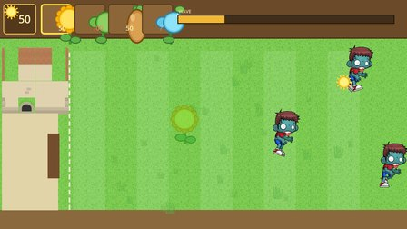
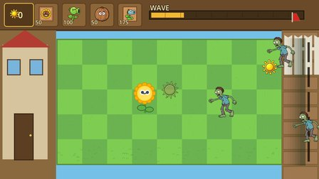

Lawn Guardians
exploreexplore
diagnosediagnose
improveimprove


R0 · generated
R12 · held best
base game · official score
61.7
playable, but
placeholder art
plants spill out of the cards
46 art files ship, 4 used
naive refinement · Play2Code
start 61.7
peaks 81.5
ends 65.7
evolving checklist
draws almost none of 46 imagesR1
“actions did not register”replay
sprites wired: 46 → 114R4–11
hit flashes, chew shakeR12
official score · rounds 0–21
held best
61.7
64.6
86.1
73.2
GameCraft-Bench · 140 tasks · Overall
50.26
61.38
49.44
58.53
Godot
Phaser
GPT-5.5 one-shot
Qwen3.8-27B + RSIGame, experience internalized
11× fewer gen. tokens
on Godot
explore, diagnose, improve,
keep the best